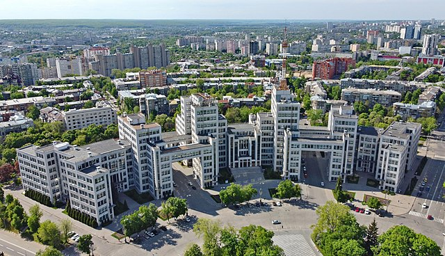

Lviv:

Kyv is the capital and most populous city of Ukraine. It is in north-central Ukraine along the Dnieper River. As of 1 January 2021, its population was 2,962,180, making Kyiv the seventh-most populous city in Europe.
Lviv:
Lviv is the largest city in Western Ukraine, and the sixth-largest in Ukraine, with a population of 717,510 (2021 est.) Lviv is one of the main cultural centres of Ukraine. It was named in honour of Leo, the eldest son of Daniel, King of Ruthenia.
Kharkiv:

Kharkiv is the second-largest city and municipality in Ukraine. Located in the northeast of the country, it is the largest city of the historic Slobozhanshchyna region. Kharkiv is the administrative centre of Kharkiv Oblast and of the surrounding Kharkiv Raion. The latest population is 1,433,886 (2021 est.).
Odesa:
Odesa is the third most populous city and municipality in Ukraine and a major seaport and transport hub located in the south-west of the country, on the northwestern shore of the Black Sea. The city is also the administrative centre of the Odesa Raion and Odesa Oblast, as well as a multiethnic cultural centre. The population in 2021 was 1,015,826 (2021 est.)